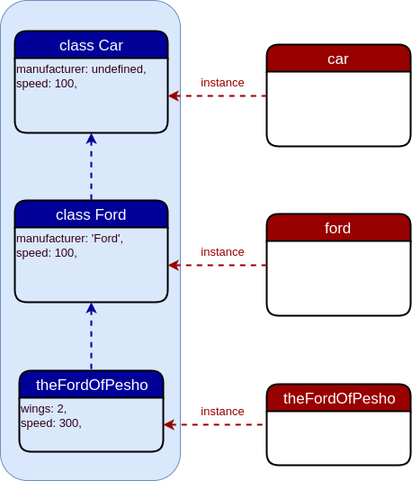

Inheritance Patterns
Създаден за
Iva E. Popova, 2016-2017,

Classical (class-based) Inheritance vs. Prototypal Inheritance
Classical (class-based) Inheritance
Classes inherits from classes!
{kind=link}
Classical (class-based) Inheritance
- The inheritance is based on copies! I.e. when a child class inherits its parents members, they are actually copied to the child class.
- The Cons?
- Gorilla / Banana problem
- Tight Coupling Problem
- Duplication by Necessity Problem
Prototypal Inheritance
- Objects inherits from objects!
{kind=link}
Prototypal Inheritance
- The inheritance is based on a prototype chain! As a result, each child will be able to access by reference its prototype.
- Pros?
- Changing prototype definitions dynamically!
Classical (class-based) Inheritance in JavaScript
example
// create 'Car' constructor
var Car = function(manufacturer, speed){
this.manufacturer = manufacturer || undefined;
this.speed= speed || 100;
}
Car.prototype= {
drive: function(){
if (this.wings >= 2){
console.log(`Flying wiht ${this.speed} km/h`);
}else{
console.log(`Driving wiht ${this.speed} km/h`);
}
}
}
// create 'Ford' constructor
var Ford = function( speed){
var manufacturer = 'Ford';
// use the parent constructor
Car.apply(this, [manufacturer, speed]);
}
// set the prototype chain
Ford.prototype.__proto__ = Car.prototype;
// create 'ford' object
var ford = new Ford(200);
// create 'theFordOfPesho' object
var theFordOfPesho = new Ford(300);
theFordOfPesho.wings = 2;
ford.drive();
theFordOfPesho.drive();
diagram
{kind=link}
Prototypal Inheritance in JavaScript
The Prototype Chain
- Each JavaScript object has a prototype object
- An object "inherits" - i.e. has access to all members of its prototype.
- An object prototype is just an object, so it can also have prototype from which to inherit from.
- This is known as the prototype chain!
Prototypal Inheritance of Object Literals using '__proto__' - example
// create 'car' object
var car = {
manufacturer: undefined,
speed: 100,
drive: function(){
if (this.wings >= 2){
console.log(`Flying wiht ${this.speed} km/h`);
}else{
console.log(`Driving wiht ${this.speed} km/h`);
}
}
}
// create the 'ford' object
var ford = {
// make 'ford' to inherit from 'car'
__proto__ : car,
manufacturer: "Ford",
speed: 200,
}
// create 'theFordOfPesho' object
var theFordOfPesho = {
// make 'theFordOfPesho' to inherit from 'ford'
__proto__ : ford,
wings: 2,
speed: 300,
}
ford.drive();
theFordOfPesho.drive();
- Be careful when using
__proto__ - Prototype_mutation on MDN
- Do not use
__proto__outside of object literals!
Prototypal Inheritance of Object Literals using '__proto__' - diagram

Prototypal Inheritance of Object Literals using Object.create() - example
// create 'car' object
var car = {
manufacturer: undefined,
speed: 100,
drive: function(){
if (this.wings >= 2){
console.log(`Flying wiht ${this.speed} km/h`);
}else{
console.log(`Driving wiht ${this.speed} km/h`);
}
}
}
// create 'ford' and make it to inherit from 'car'
var ford = Object.create( car, {
manufacturer: {value: "Ford"},
speed: {value: 200},
})
// create 'theFordOfPesho' and make it to inherit from 'ford'
var theFordOfPesho = Object.create(ford, {
wings: {value: 2},
speed: {value: 300},
})
ford.drive();
theFordOfPesho.drive();
Prototypal Inheritance of Object Literals using Object.create() - diagram

- Yes, the diagram is identical with the one with '
__proto__' - It's better and safe to use
Object.create()aproach, instead of '__proto__'
Prototypal Inheritance of constructed objects
// Animal constructor
var Animal = function(food){
this.food = food;
}
Animal.prototype.eat = function(){
console.log(`${this.name} is eating ${this.food}`);
}
// Cat constructor
var Cat = function(name, food){
// reuse the Animal Constructor
Animal.call(this, food);
this.name = name || 'Tom';
}
// Cat objects will inherit from Animal.prototype
Cat.prototype = Object.create(Animal.prototype);
// Cat instance
var tom = new Cat('Tom', 'cheese');
tom.eat();
These slides are based on
customised version of
framework